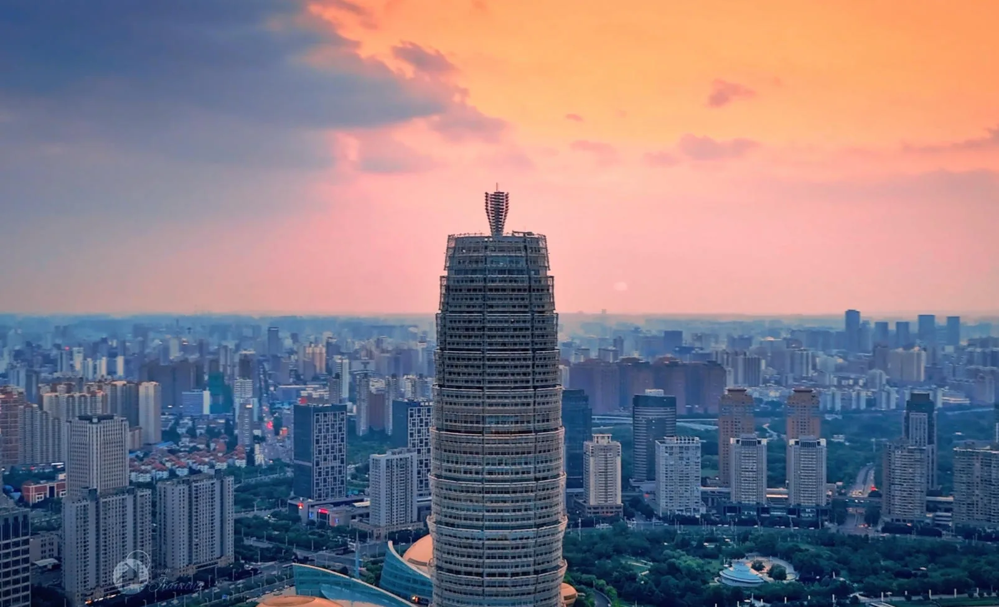
Scenic Spots
From sacred mountains to ancient temples, Zhengzhou's landscapes are a masterpiece painted by nature and history.

From sacred mountains to ancient temples, Zhengzhou's landscapes are a masterpiece painted by nature and history.
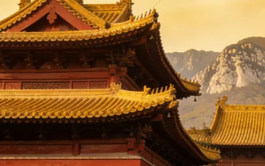
Dengfeng, Zhengzhou
Founded in 495 AD, the Shaolin Temple is the birthplace of Zen Buddhism and Chinese martial arts. Nestled in the dense forests of Mount Song, this UNESCO World Heritage Site attracts millions who come to witness legendary Kung Fu performances and explore the Pagoda Forest with over 240 stone pagodas.
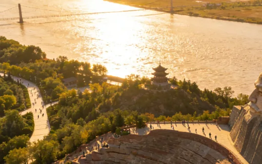
Northwest Zhengzhou
The Yellow River, China's "Mother River," flows through the northern outskirts of Zhengzhou. The scenic area offers panoramic views of the vast river, Yueshan Mountain, and the iconic statues of emperors Yan and Huang, symbolizing the origins of Chinese civilization.
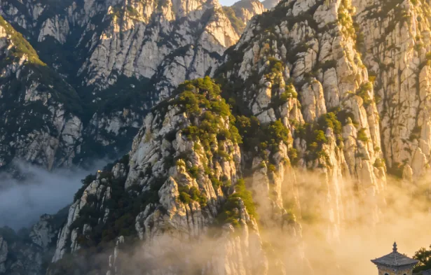
Dengfeng, Zhengzhou
One of the Five Great Mountains of China, Mount Song rises 1,500 meters and is a UNESCO World Heritage Site. Its rugged peaks, ancient Taoist and Buddhist temples, and the historic astronomical observatory make it a treasure trove of natural beauty and cultural significance.
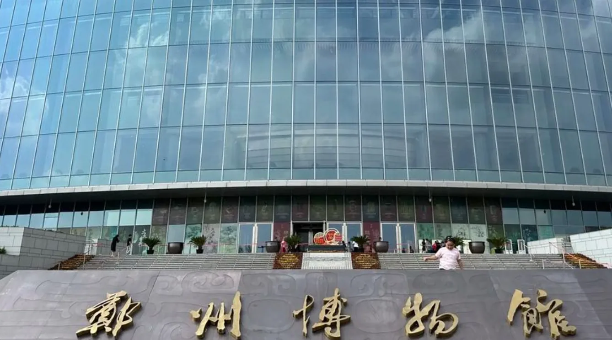
Jinshui District, Zhengzhou
One of China's oldest and largest museums, housing over 170,000 cultural relics. Its striking pyramid-like architecture contains treasures from prehistoric jade artifacts to Shang Dynasty bronze vessels, spanning 5,000 years of Chinese history.
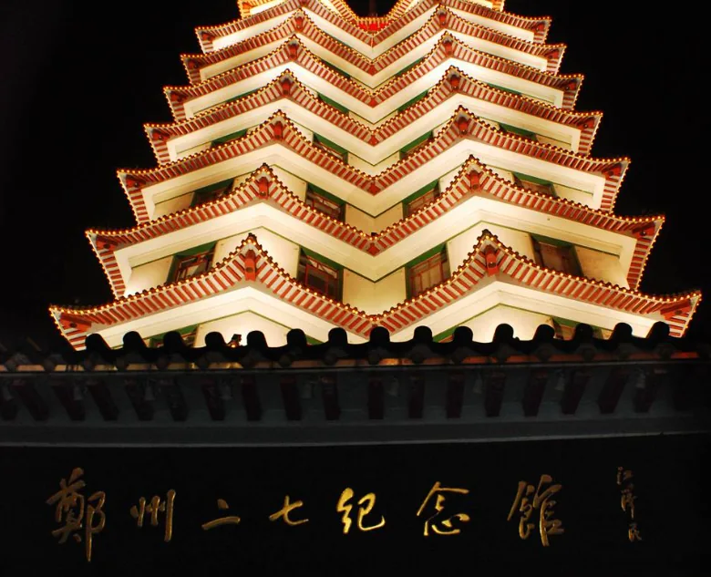
Erqi District, Zhengzhou
This iconic double-pagoda tower stands as the symbol of modern Zhengzhou. Built in 1971 to commemorate the February 7th railway workers' strike, the 63-meter tower combines traditional Chinese architecture with socialist monument design, dominating the city's commercial heart.
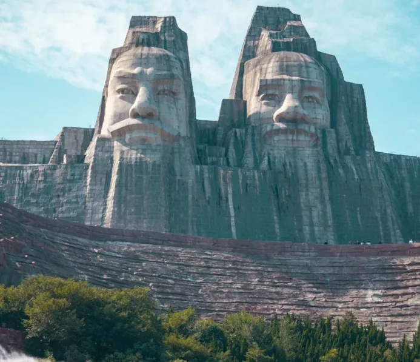
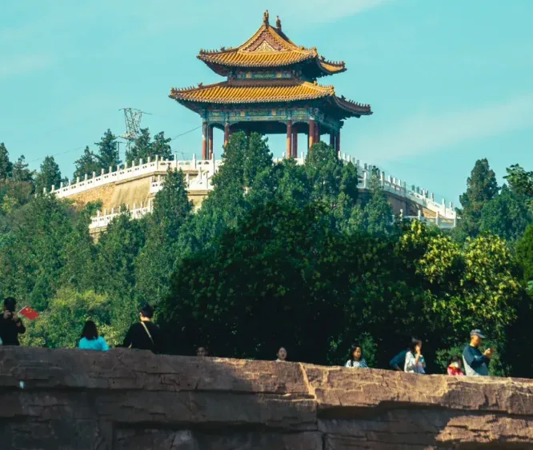
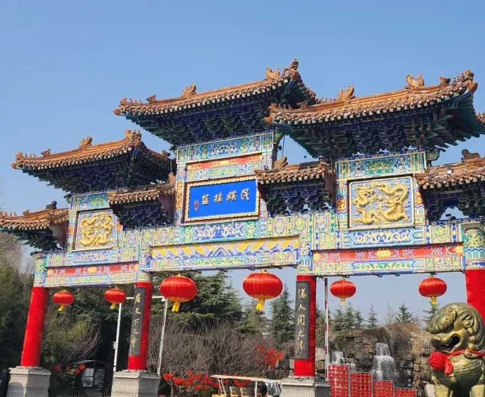
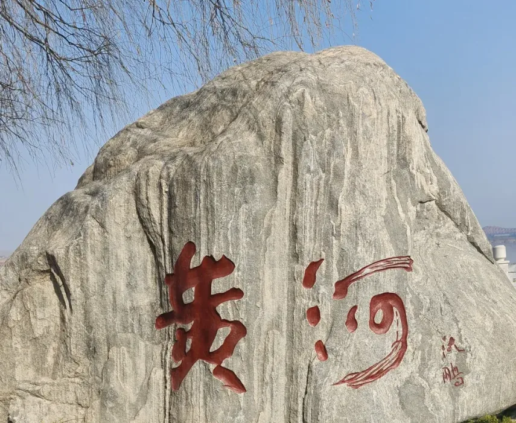
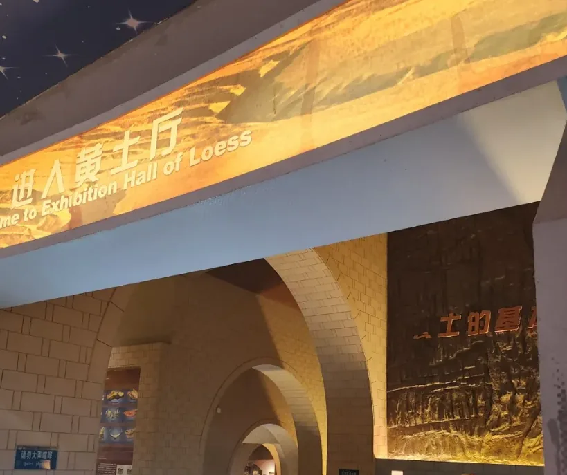
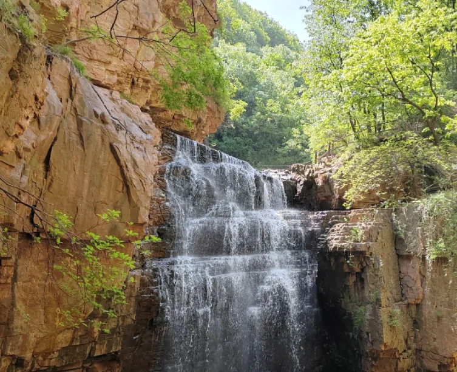
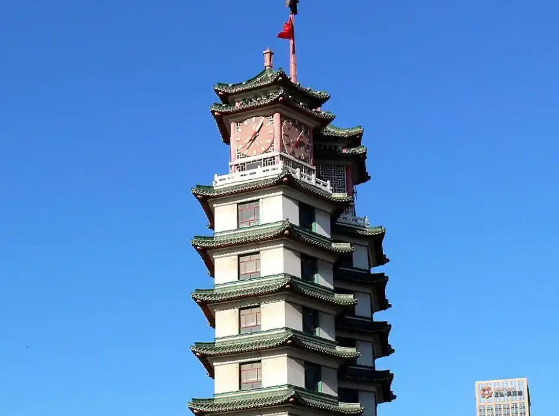
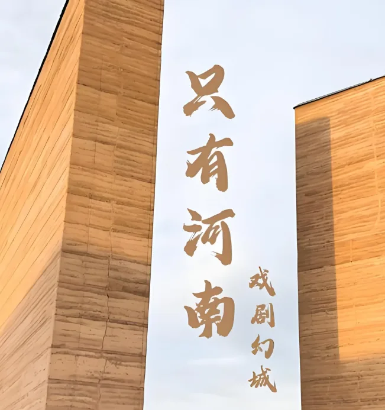